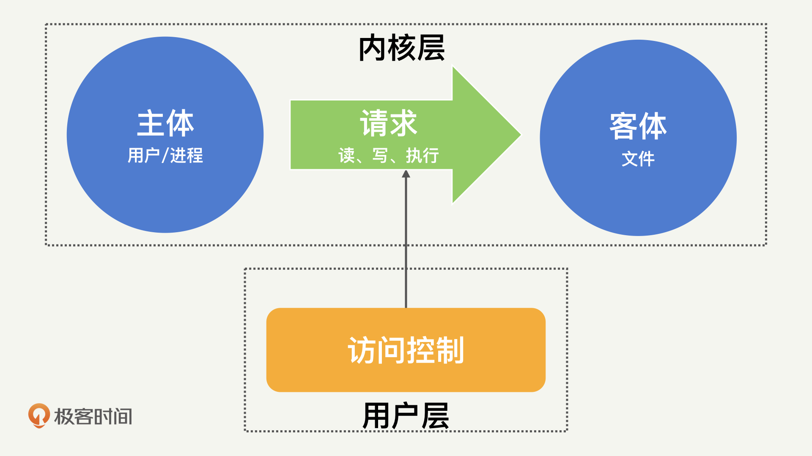
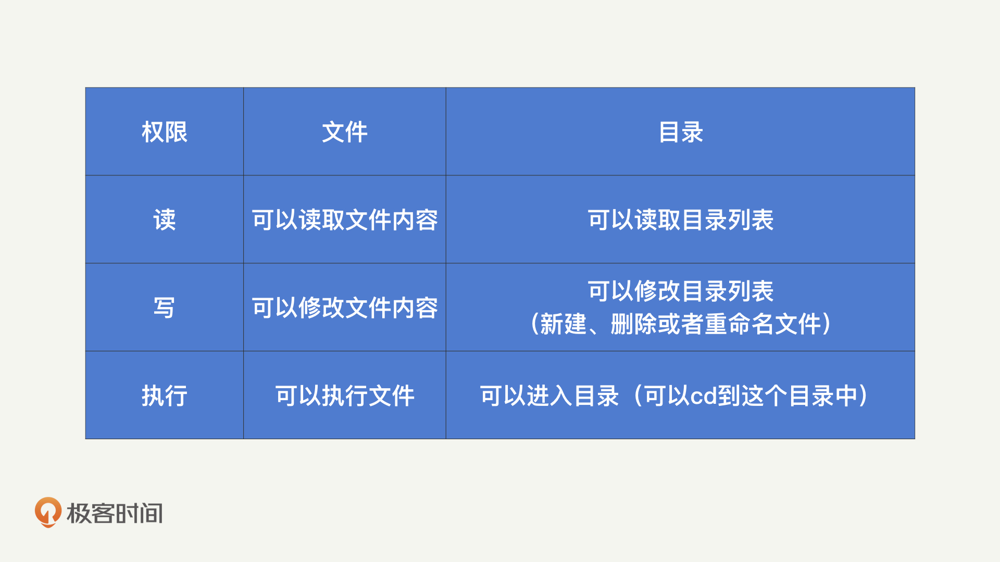
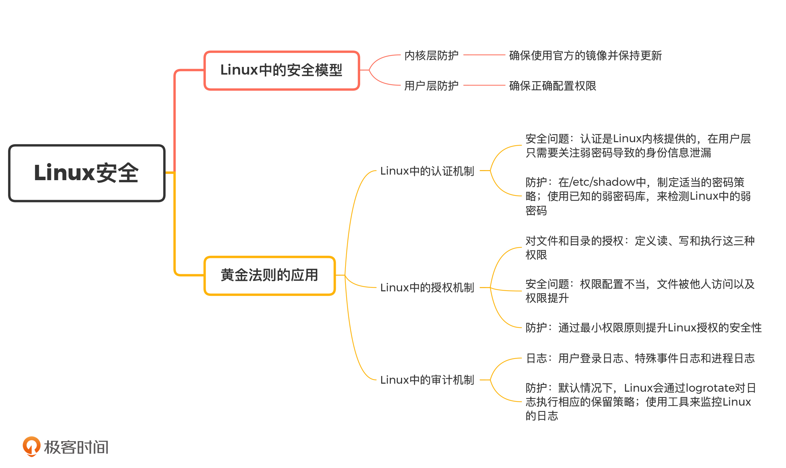

- 00 开篇词 别说你没被安全困扰过.md.html
- 01 安全的本质：数据被窃取后，你能意识到问题来源吗？.md.html
- 02 安全原则：我们应该如何上手解决安全问题？.md.html
- 03 密码学基础：如何让你的密码变得“不可见”？.md.html
- 04 身份认证：除了账号密码，我们还能怎么做身份认证？.md.html
- 05 访问控制：如何选取一个合适的数据保护方案？.md.html
- 06 XSS：当你“被发送”了一条微博时，到底发生了什么？.md.html
- 07 SQL注入：明明设置了强密码，为什么还会被别人登录？.md.html
- 08 CSRF_SSRF：为什么避免了XSS，还是“被发送”了一条微博？.md.html
- 09 反序列化漏洞：使用了编译型语言，为什么还是会被注入？.md.html
- 10 信息泄露：为什么黑客会知道你的代码逻辑？.md.html
- 11 插件漏洞：我的代码看起来很安全，为什么还会出现漏洞？.md.html
- 13 Linux系统安全：多人共用服务器，如何防止别人干“坏事”？.md.html
- 14 网络安全：和别人共用Wi-Fi时，你的信息会被窃取吗？.md.html
- 15 Docker安全：在虚拟的环境中，就不用考虑安全了吗？.md.html
- 16 数据库安全：数据库中的数据是如何被黑客拖取的？.md.html
- 17 分布式安全：上百个分布式节点，不会出现“内奸”吗？.md.html
- 18 安全标准和框架：怎样依“葫芦”画出好“瓢”？.md.html
- 19 防火墙：如何和黑客“划清界限”？.md.html
- 20 WAF：如何为漏洞百出的Web应用保驾护航？.md.html
- 21 IDS：当黑客绕过了防火墙，你该如何发现？.md.html
- 22 RASP：写规则写得烦了？尝试一下更底层的IDS.md.html
- 23 SIEM：一个人管理好几个安全工具，如何高效运营？.md.html
- 24 SDL：怎样才能写出更“安全”的代码？.md.html
- 25 业务安全体系：对比基础安全，业务安全有哪些不同？.md.html
- 26 产品安全方案：如何降低业务对黑灰产的诱惑？.md.html
- 27 风控系统：如何从海量业务数据中，挖掘黑灰产？.md.html
- 28 机器学习：如何教会机器识别黑灰产？.md.html
- 29 设备指纹：面对各种虚拟设备，如何进行对抗？.md.html
- 30 安全运营：“黑灰产”打了又来，如何正确处置？.md.html
- 加餐1 数据安全：如何防止内部员工泄露商业机密？.md.html
- 加餐2 前端安全：如何打造一个可信的前端环境？.md.html
- 加餐3 职业发展：应聘安全工程师，我需要注意什么？.md.html
- 加餐4 个人成长：学习安全，哪些资源我必须要知道？.md.html
- 加餐5 安全新技术：IoT、IPv6、区块链中的安全新问题.md.html
- 模块串讲（一）Web安全：如何评估用户数据和资产数据面临的威胁？.md.html
- 模块串讲（三）安全防御工具：如何选择和规划公司的安全防御体系？.md.html
- 模块串讲（二）Linux系统和应用安全：如何大范围提高平台安全性？.md.html
- 结束语 在与黑客的战役中，我们都是盟友！.md.html
- 捐赠
13 Linux系统安全：多人共用服务器，如何防止别人干“坏事”？
你好，我是何为舟。
从这一讲开始，我们讨论Linux系统和应用安全。我们知道，在开发一个应用的过程中，需要涉及代码、操作系统、网络和数据库等多个方面。所以，只是了解代码安全肯定是不够的，我们还需要了解常见的基础环境和工具中的安全机制，学会通过正确地配置这些安全机制，来提升安全保障。
谈到Linux，我相信你每天都在使用Linux进行各种开发和运维操作。但是，大多数情况下，公司不会给每一个员工分配专有的Linux服务器，而是多个开发和运维共用一台Linux服务器。那么，其他员工在使用Linux服务器的时候，会不会对我们自己的数据和进程产生影响呢？另外，我在Web安全中讲过，黑客可以通过很多漏洞控制Linux服务器，那我们又该如何避免和控制黑客的破坏呢？
如何理解Linux中的安全模型？
要解决这些安全问题，我们首先要了解一个安全模型，Linux的安全模型。
我们先来看一下Linux的构成，Linux可以分为内核层和用户层。用户层通过内核层提供的操作接口来执行各类任务。
内核层提供的权限划分、进程隔离和内存保护的安全功能，是用户层的安全基础。一旦内核安全被突破（比如黑客能够修改内核逻辑），黑客就可以任意地变更权限、操作进程和获取内存了。这个时候，任何用户层的安全措施都是没有意义的。
既然Linux的内核安全这么重要，那我们是不是要在防护上付出大量的精力呢？事实上，正如我们不需要在开发应用时（尤其是使用Java这类相对高层的语言时），过多地关心操作系统相关的内容一样，我们在考虑Linux安全时，也不需要过多地考虑内核的安全，更多的是要考虑用户层的安全。所以，对于Linux内核层的安全，我们只需要按照插件漏洞的防护方法，确保使用官方的镜像并保持更新就足够了。
既然，使用最多的是用户层，那我们就来看一下，用户层的操作都有什么。
在Linux中，用户层的所有操作，都可以抽象为“主体->请求->客体”这么一个流程。比如，“打开/etc/passwd”这一操作的主体是实际的用户，请求是读，客体是/etc/passwd这个文件。

在这个过程中，Linux内核安全提供了基于权限的访问控制，确保数据不被其他操作获取。Linux用户层则需要确保权限的正确配置，这就是我开篇提到的，如何保证多人安全地共用服务器的关键，也是我们这节课需要关注的重点内容。
黄金法则是如何在Linux系统中应用的？
现在我们知道了，Linux系统安全防护的核心是正确配置用户层权限。那接下来，我们就从黄金法则的认证、授权和审计这三个方面来看一下，Linux系统是如何进行权限配置的，这其中，又有哪些值得我们重点关注的安全选项。
1.Linux中的认证机制
Linux系统是一个支持多用户的操作系统，它通过普通的文本文件来保存和管理用户信息。这其中，有两个比较关键的文件：/etc/passwd和/etc/shadow。
我们知道，在Linux中，/etc/passwd是全局可读的，不具备保密性。因此，/etc/passwd不会直接存储密码，而是用x来进行占位。那实际的用户密码信息，就会存储到仅ROOT可读的/etc/shadow中。
在/etc/shadow中，除了加密后的密码，也保存了诸如密码有效天数、失效多少天告警之类的密码管理策略。我们可以通过Chage命令来对密码管理策略进行修改，比如，通过下面的Chage命令，就可以强制Test用户在60天内必须对密码进行修改。通过这样的方式，就可以降低密码泄露的可能性了。
chage -M 60 test
因为认证这个功能是由Linux内核来提供的，所以在用户层，我们需要关心的安全问题，就是弱密码导致的身份信息泄露。为了解决这个问题，在/etc/shadow中，我们可以制定适当的密码策略。除此之外，我们也可以通过John the Ripper，使用已知的弱密码库，来对Linux中的弱密码进行检测。下面的命令，就是使用John the Ripper检测弱密码。
unshadow /etc/passwd /etc/shadow > mypasswd
john mypasswd
john --show mypassw
2.Linux中的授权机制
在“黄金法则”中，认证只是第一步，它提供了一个可信的身份标识。有了这个身份标识之后，就需要通过授权来限制用户能够发起的请求了。
在Linux中，客体只有文件和目录两种，针对这两种类型的客体，Linux都定义了读、写和执行这三种权限。你可以通过我总结的这张对比表格看到，文件和目录在这三种权限上的区别。

除此之外，Linux还提供了一些额外的权限标签，来进行更细粒度的权限控制。
比如，Linux提供了文件属性的概念，来对文件设置更多的保护。通过chattr +i /etc/passwd可以防止文件被任何用户修改。想要了解更多的文件属性，你可以参考Wikipedia。
Linux还提供了“粘滞位”的功能，主要用来防止用户随意操作其他用户的文件。比如chmod +t /tmp可以阻止删除/tmp目录下其他用户的文件。
这些都是Linux在授权中的自我保护机制，那我们能在这个过程中进行怎样的防护呢？
前面，我们一直在强调，Linux系统面临的安全威胁其实就是权限问题。也就是说，要么就是敏感文件的权限配置不当，导致这些文件可以被额外的用户访问或执行；要么就是应用存在漏洞或密码泄露，导致低权限用户可以获得更高的权限。
要解决权限问题，我们就要实践最小权限原则。
我们先来看一个Linux系统安全中最普遍的问题：滥用ROOT。很多人在登录Linux系统后，第一个命令就是通过su来获取ROOT的Shell环境，这样我们就不需要在每次操作的时候，通过sudo来临时提升至ROOT权限。
但是，这里你需要注意一点，在ROOT的Shell环境中启动的所有进程也都具备ROOT权限。如果启动的是一个立即返回的进程，如CAT，不会有太多问题，但如果是一个长期运行的进程，就很容易产生权限的滥用。
比如，当你以ROOT的身份启动Redis或者MySQL等存储工具时，如果这时有其他用户连入Redis或者MySQL，那他们也能间接地获取ROOT的权限。在大部分服务器入侵的场景中，黑客都是通过这些具备ROOT权限的进程漏洞，来实现权限提升的。
因此，在运行任何长驻进程时，我们都需要谨记“最小权限”原则。也就是说，我们可以根据要执行的操作等级，配置“最小权限”来启动常驻进程。比如，如果只是在Redis和MySQL这样的数据库中进行文件读写操作，根本不需要ROOT这种最高等级的权限。
因此，“最小权限”原则在Linux系统中的应用是非常重要的。那你可能会问了，Linux系统中的操作那么多，每个操作都需要自己进行权限配置吗？当然不是，我们常常会使用一些已知的工具，来实现“最小权限”启动长驻进程的功能，而你需要做的，就是正确地启动或者配置这些工具。
比如说，我们可以通过mysqld启动MySQL服务，mysqld会将MySQL的进程分配到“mysql”这个用户，并在ROOT下建立守护进程。具体的效果如下：
root 297353 0.0 0.0 115432 1360 ? S Aug12 0:00 /bin/sh /usr/local/mysql/bin/mysqld_safe --datadir=/var/lib/mysql --pid-file=/var/lib/mysql/mysql.pid
mysql 297553 31.3 4.3 11282756 5729572 ? Sl Aug12 22593:40 /usr/local/mysql/bin/mysqld --basedir=/usr/local/mysql --datadir=/var/lib/mysql --plugin-dir=/usr/local/mysql/lib/plugin --user=mysql --log-error=/var/log/mariadb/mariadb.log --pid-file=/var/lib/mysql/mysql.pid --socket=/var/lib/mysql/mysql.sock
类似地，当启动Nginx时，Nginx会将Worker节点以nobody的用户身份来执行。具体的效果如下：
root 7083 0.0 0.0 61032 5324 ? Ss Aug12 0:01 nginx: master process nginx
nobody 331122 0.0 0.0 90768 31776 ? S 11:44 0:00 nginx: worker process
nobody 331123 0.0 0.0 90768 32720 ? S 11:44 0:00 nginx: worker process
nobody 331124 0.0 0.0 90768 31776 ? S 11:44 0:00 nginx: worker process
当然，也有一些工具不提供这类最小权限切换的功能，比如，在直接执行redis-server启动Redis的时候，就需要我们自己来对用户身份进行切换。那用户身份切换怎么做呢？
我们首先来看Nginx的例子，在启动Nginx的时候，Linux提供了nobody这么一个用户的身份。实际上，任何人进入Linux系统首先获得的用户身份就是nobody，然后再从nobody进行登录，切换到其他正常用户身份上。
因此，nobody通常拥有整个操作系统中最小的权限。所以，对于不提供最小权限切换功能的工具，我们就可以使用nobody的用户身份，来进行主动切换了。
在执行redis-server启动Redis的时候，我们就可以通过以下命令，以nobody的身份执行redis-server了（前提是，我们需要对日志和PID等目录进行适当配置，确保能够以nobody身份写入）：
su -s /bin/redis-server nobody
这样一来，我们就能通过“最小权限”原则，提升Linux系统授权的安全性了。
3.Linux中的审计机制
我们在前面的课程中说过，“黄金法则”中的审计主要就是日志记录和分析。那么，Linux系统中的日志都有哪些呢？在Linux系统中，系统的日志信息通常存储在/var/log目录下，部分应用程序也会把相关日志记录到这个目录中。系统日志主要分为3类，用户登录日志、特殊事件日志和进程日志。
用户登录日志主要是/var/log/wtmp和/var/run/utmp，用来保存用户登录相关的信息。用户登录日志本身为二进制文件，我们无法直接通过文本方式查看，但是可以配合who/users/ac/last/lastlog这样的命令来获取。
特殊事件日志主要包括/var/log/secure和/var/log/message。其中，/var/log/secure主要记录认证和授权相关的记录，如果有人试图爆破SSH，我们就可以从这个日志中观察出来。/var/log/message由syslogd来维护，syslogd这个守护进程提供了一个记录特殊事件和消息的标准机制，其他应用可以通过这个守护进程来报告特殊的事件。
进程日志：当通过accton来进行系统进程管理时，会生成记录用户执行命令的pacct文件。
默认情况下，Linux会通过logrotate对日志执行相应的保留策略（比如日志切割和旧日志删除等）。通过配置/etc/logrotate.conf可以对不同日志的保留策略进行修改。
那如何对日志进行监控呢？这里，我向你推荐2种常见的日志分析工具ELK和Zabbix，你可以利用这些工具来监控Linux的安全日志。也就是说，我们可以通过在这些分析平台配置恰当的规则（如SSH登录尝试失败3次以上），来及时发现黑客的部分入侵尝试，迅速产生报警。然后，我们就可以针对具体的问题，进行人工复查了。
总结
好了，今天的内容讲完了。我们来一起总结回顾一下，你需要掌握的重点内容。
Linux系统安全可以说是“最小权限”原则的最佳实践平台，尤其是当存在多用户共同维护和使用一台服务器的时候，正确的配置权限将是一件很有挑战的工作。为此，我们必须严格限制ROOT权限的使用。同时，为了避免进程漏洞，适当地通过iptables进行访问限制，也能够起到不错的保护效果。
在Linux系统的自我保护基础之上，也有一些安全工具能够为系统提供额外的保护功能（如杀毒软件、HIDS等），在后续的内容中，我们会深入讲解这些工具。
最后，我把这一讲的重点内容梳理了一个脑图。你可以用它来查漏补缺，也可以自己来梳理看看，加深印象。

思考题
最后给你留一个思考题。
检查一下你的Linux服务器，看一下哪些用户具备ROOT权限？那些进程具备ROOT权限？这些用户和进程，真的需要ROOT权限吗？我们是否可以利用今天学到的知识，对这些ROOT权限进行限制呢？
欢迎留言和我分享你的思考和疑惑，也欢迎你把文章分享给你的朋友。我们下一讲再见！
© 2019 - 2023 Liangliang Lee. Powered by gin and hexo-theme-book.